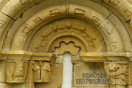

En el resto de ventanas se observa una decoración basada en temas vegetales, mascarones grotescos, y monstruos estilófagos, es decir que engullen a la propia columna.
-
El ábside, en el exterior, presenta tres ventanas, dos de ellas más pequeñas y ciegas, la central, muy abocinada y encargada de dar luz al interior del edificio. Su tamaño y su elaboración la equipara con la portada, en cuanto a elementos estructurales y decorativos se refiere. Consta de tres arquivoltas apoyadas en tres pares de columnas.
- 
Aquí se repite la temática de los personajes encerrados en la piedra y que dejan ver solamente sus caras y piernas, que junto a un capitel en el que aparece una cara tapándose la boca, refuerzan la teoría de que están ocultándonos algún secreto o misterio. Los fustes de las columnas de esta zona absidial están tallados con motivos florales y cestería.
Ya en el interior de la ermita observamos que los capiteles situados en las ventanas representan cabezas humanas, finamente talladas, con mucho detalle, y con una expresión mucho más serena que las del exterior.